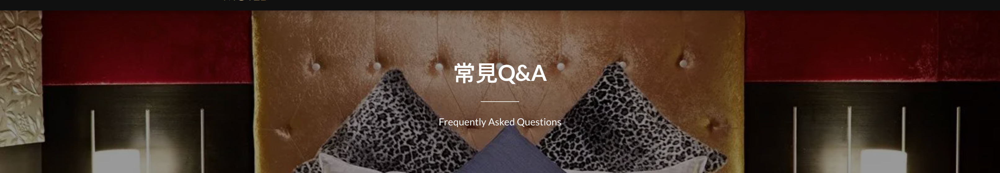

A：住宿一律提供免費早餐，無須額外付費。

A：採現場、電話、官網及各大平台、官方LINE進行訂房。
平日訂房可至現場再行付款；假日及連假需於時間內支付全款訂金方可完成訂房。
A：全館支持刷卡、現金、轉帳匯款。
A：為保證雙方權益，全館訂房皆須收取訂金，訂金為房價全額。
A：可以，請依交通部觀光旅館訂房定型化契約相關規範辦理。
A：可以。歡迎提前辦理住房手續並寄放行李於本館內。
高雄鳳山館、自由館、湖內館：平日晚上六時後入住，假日晚上八時後入住，退房皆為中午十二時前。
台南館：平日下午四時後入住，假日晚上六時後入住，退房為中午十二時前。
A：禁止攜帶寵物。若經發現酌收清潔費三千元整。
A：可以，全館採人頭計費。人頭費僅限同一人進出，如換人需重新收費。
A：本館將為您保留10分鐘，如有特殊狀況請致電該分館，由現場人員為您安排。
A：本館提供12小時住宿服務；凌晨24:00含以後入住，一律住滿12小時。